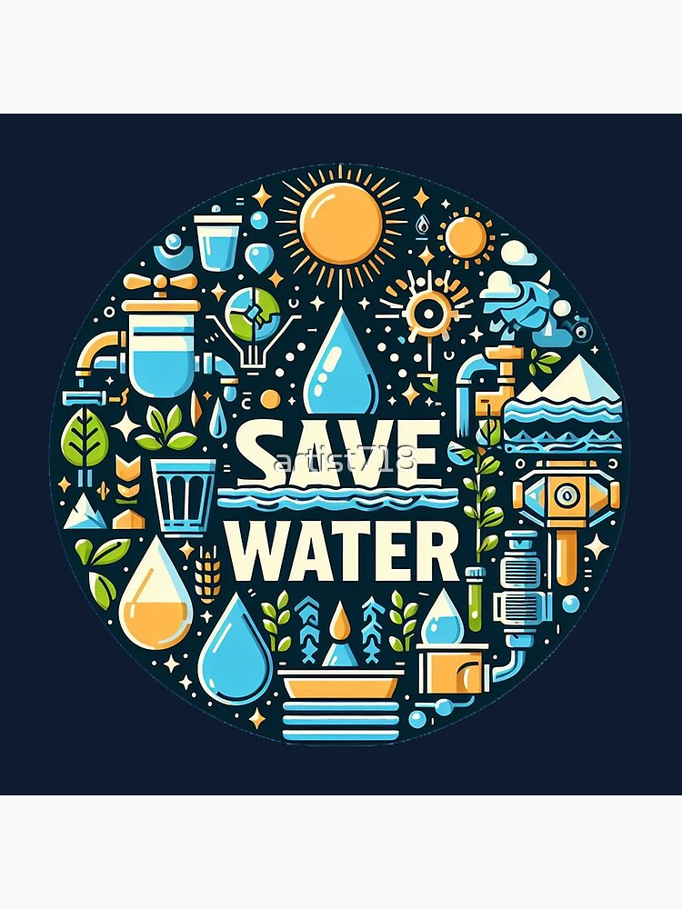

Embrace sustainability with our Automated Water Saving Systems. This innovative project focuses on
creating intelligent solutions for efficient water management, particularly in agricultural and urban
settings.
By integrating sensors and smart algorithms, the system monitors water usage in real-time, optimizing consumption while minimizing waste. It empowers users to make informed decisions, ensuring that every drop counts.
With a focus on environmental conservation, this technology not only enhances water efficiency but also supports responsible resource management. Join us in making a significant impact on water conservation and sustainability through intelligent automation.